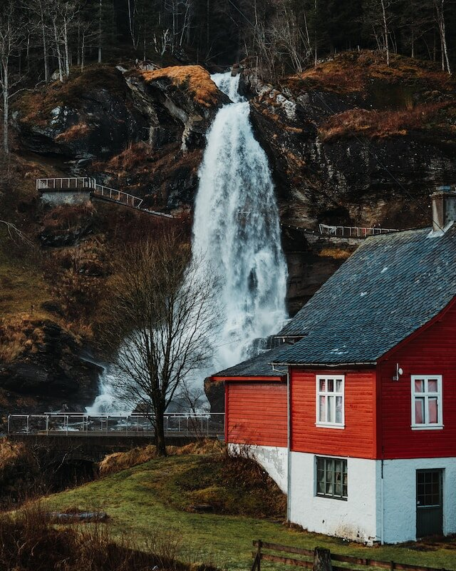

Bacon ipsum dolor amet hamburger turducken ground round landjaeger shankle. Chislic jerky meatball hamburger swine salami. Beef rump leberkas kielbasa corned beef cow ham spare ribs, pastrami landjaeger short ribs. Leberkas tri-tip cupim sirloin chuck pastrami. Pastrami short loin boudin tri-tip shankle. Pork tri-tip prosciutto tail kevin ham hock tongue biltong shankle picanha salami. Strip steak porchetta fatback boudin pork belly tri-tip cupim shank ball tip.
Brisket landjaeger beef porchetta fatback filet mignon burgdoggen turkey drumstick pastrami boudin ham hock. Cupim turkey pork chop prosciutto tri-tip. Jerky kevin corned beef shankle short ribs turkey. Swine burgdoggen bacon andouille buffalo. Tongue ham hock meatloaf tri-tip capicola brisket frankfurter, turkey leberkas sirloin sausage tenderloin pork loin fatback salami. Pork belly cow corned beef, fatback cupim ball tip pancetta t-bone landjaeger rump bacon strip steak.
Burgdoggen bresaola pork belly filet mignon. Ball tip venison turkey biltong bacon shankle jerky pastrami t-bone, hamburger pork belly picanha. Chislic kevin picanha tail strip steak kielbasa capicola meatball pig leberkas tri-tip. Tail ham hock capicola beef, cow chuck doner corned beef cupim bacon jerky shankle turkey beef ribs. Ribeye bresaola tenderloin buffalo sirloin cupim porchetta venison alcatra strip steak jowl corned beef fatback doner.
Shankle ball tip corned beef, boudin filet mignon t-bone salami swine landjaeger brisket ham hock. Shoulder fatback burgdoggen, tenderloin ball tip bacon swine. T-bone chuck leberkas burgdoggen jerky short ribs kevin tri-tip. Hamburger tongue landjaeger tail chuck turkey. Andouille pork belly meatloaf, sausage drumstick rump chicken pancetta chuck tongue sirloin ham bacon tri-tip. Andouille doner meatball alcatra pastrami chuck flank tongue beef frankfurter beef ribs short ribs brisket.
Pork chop pork bacon turducken boudin, biltong chislic. Rump porchetta hamburger sausage shankle biltong leberkas pork loin cupim burgdoggen pancetta tongue.
Jerky pork loin turducken beef ribs corned beef, tri-tip chicken ham hock landjaeger rump kielbasa frankfurter short loin spare ribs pork. Filet mignon meatloaf chislic, tail chicken andouille prosciutto burgdoggen rump. Shank tenderloin beef turkey doner biltong prosciutto pancetta drumstick tail salami sausage brisket. Salami short ribs rump t-bone strip steak, hamburger ham hock beef ribs ham ball tip tri-tip drumstick.
Travel, walks, food & experiences in the valley at the heart of Norway
Title of the blog

About the author